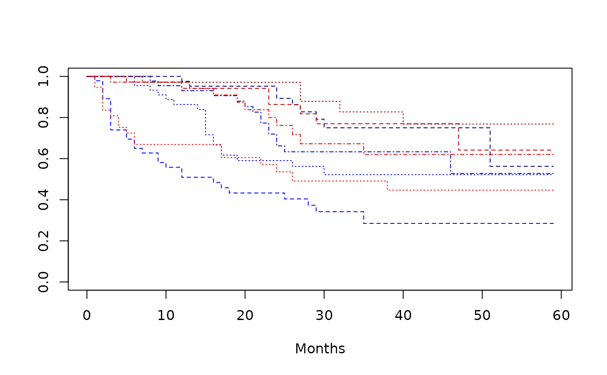

![[Stable]](figures/lifecycle-stable.svg)
Fits a Cox regression model and estimates hazard ratio to describe the effect size in a survival analysis.
Usage
s_coxreg(model_df, .stats, .which_vars = "all", .var_nms = NULL)
a_coxreg(
df,
labelstr,
eff = FALSE,
var_main = FALSE,
multivar = FALSE,
variables,
at = list(),
control = control_coxreg(),
.spl_context,
.stats,
.formats,
.indent_mods = NULL,
na_level = "",
cache_env = NULL
)
summarize_coxreg(
lyt,
variables,
control = control_coxreg(),
at = list(),
multivar = FALSE,
common_var = "STUDYID",
.stats = c("n", "hr", "ci", "pval", "pval_inter"),
.formats = c(n = "xx", hr = "xx.xx", ci = "(xx.xx, xx.xx)", pval =
"x.xxxx | (<0.0001)", pval_inter = "x.xxxx | (<0.0001)"),
varlabels = NULL,
.indent_mods = NULL,
na_level = "",
.section_div = NA_character_
)Arguments
- model_df
(
data.frame)
contains the resulting model fit from a fit_coxreg function with tidying applied viabroom::tidy().- .stats
-
(
character)
the name of statistics to be reported among:n: number of observations (univariate only)hr: hazard ratioci: confidence intervalpval: p-value of the treatment effectpval_inter: p-value of the interaction effect between the treatment and the covariate (univariate only)
- .which_vars
(
character)
which rows should statistics be returned for from the given model. Defaults to "all". Other options include "var_main" for main effects,"inter"for interaction effects, and"multi_lvl"for multivariate model covariate level rows. When.which_varsis "all" specific variables can be selected by specifying.var_nms.- .var_nms
(
character)
thetermvalue of rows indffor which.statsshould be returned. Typically this is the name of a variable. If using variable labels,varshould be a vector of both the desired variable name and the variable label in that order to see all.statsrelated to that variable. When.which_varsis"var_main".var_nmsshould be only the variable name.- df
(
data.frame)
data set containing all analysis variables.- labelstr
(
character)
label of the level of the parent split currently being summarized (must be present as second argument in Content Row Functions). Seertables::summarize_row_groups()for more information.- eff
(
flag)
whether treatment effect should be calculated. Defaults toFALSE.- var_main
(
flag)
whether main effects should be calculated. Defaults toFALSE.- multivar
(
flag)
Defaults toFALSE. IfTRUEmultivariate Cox regression will run, otherwise univariate Cox regression will run.- variables
(named
listofstring)
list of additional analysis variables.- at
(
listofnumeric)
when the candidate covariate is anumeric, useatto specify the value of the covariate at which the effect should be estimated.- control
(
list)
a list of parameters as returned by the helper functioncontrol_coxreg().- .spl_context
(
data.frame)
gives information about ancestor split states that is passed byrtables.- .formats
(named
characterorlist)
formats for the statistics.- .indent_mods
(named
integer)
indent modifiers for the labels. Defaults to 0, which corresponds to the unmodified default behavior. Can be negative.- na_level
(
string)
custom string to replace allNAvalues with. Defaults to"".- cache_env
(
environment)
an environment object used to cache the regression model in order to avoid repeatedly fitting the same model for every row in the table. Defaults toNULL(no caching).- lyt
(
layout)
input layout where analyses will be added to.- common_var
(
character)
the name of a factor variable in the dataset which takes the same value for all rows. This should be created during pre-processing if no such variable currently exists.- varlabels
(
list)
a named list corresponds to the names of variables found in data, passed as a named list and corresponding to time, event, arm, strata, and covariates terms. If arm is missing from variables, then only Cox model(s) including the covariates will be fitted and the corresponding effect estimates will be tabulated later.- .section_div
(
character)
string which should be repeated as a section divider between sections. Defaults toNAfor no section divider. If a vector of two strings are given, the first will be used between treatment and covariate sections and the second between different covariates.
Value
s_coxreg()returns the selected statistic for from the Cox regression model for the selected variable(s).
a_coxreg()returns formattedrtables::CellValue().
summarize_coxreg()returns a layout object suitable for passing to further layouting functions, or tortables::build_table(). Adding this function to anrtablelayout will add a Cox regression table containing the chosen statistics to the table layout.
Details
Cox models are the most commonly used methods to estimate the magnitude of the effect in survival analysis. It assumes proportional hazards: the ratio of the hazards between groups (e.g., two arms) is constant over time. This ratio is referred to as the "hazard ratio" (HR) and is one of the most commonly reported metrics to describe the effect size in survival analysis (NEST Team, 2020).
Functions
s_coxreg(): Statistics function that transforms results tabulated fromfit_coxreg_univar()orfit_coxreg_multivar()into a list.a_coxreg(): Analysis function which is used asafuninrtables::analyze()andcfuninrtables::summarize_row_groups()withinsummarize_coxreg().summarize_coxreg(): Layout-creating function which creates a Cox regression summary table layout. This function is a wrapper for severalrtableslayouting functions. This function is a wrapper forrtables::analyze_colvars()andrtables::summarize_row_groups().
See also
fit_coxreg for relevant fitting functions, h_cox_regression for relevant helper functions, and tidy_coxreg for custom tidy methods.
fit_coxreg_univar() and fit_coxreg_multivar() which also take the variables, data,
at (univariate only), and control arguments but return unformatted univariate and multivariate
Cox regression models, respectively.
Examples
library(survival)
# Testing dataset [survival::bladder].
set.seed(1, kind = "Mersenne-Twister")
dta_bladder <- with(
data = bladder[bladder$enum < 5, ],
tibble::tibble(
TIME = stop,
STATUS = event,
ARM = as.factor(rx),
COVAR1 = as.factor(enum) %>% formatters::with_label("A Covariate Label"),
COVAR2 = factor(
sample(as.factor(enum)),
levels = 1:4, labels = c("F", "F", "M", "M")
) %>% formatters::with_label("Sex (F/M)")
)
)
dta_bladder$AGE <- sample(20:60, size = nrow(dta_bladder), replace = TRUE)
dta_bladder$STUDYID <- factor("X")
plot(
survfit(Surv(TIME, STATUS) ~ ARM + COVAR1, data = dta_bladder),
lty = 2:4,
xlab = "Months",
col = c("blue1", "blue2", "blue3", "blue4", "red1", "red2", "red3", "red4")
)

# s_coxreg
# Univariate
u1_variables <- list(
time = "TIME", event = "STATUS", arm = "ARM", covariates = c("COVAR1", "COVAR2")
)
univar_model <- fit_coxreg_univar(variables = u1_variables, data = dta_bladder)
df1 <- broom::tidy(univar_model)
s_coxreg(model_df = df1, .stats = "hr")
#> $hr
#> $hr$`2 vs control (1)`
#> [1] 0.6386426
#>
#>
#> $hr
#> $hr$`A Covariate Label`
#> [1] 0.607037
#>
#>
#> $hr
#> $hr$`Sex (F/M)`
#> [1] 0.6242738
#>
#>
# Univariate with interactions
univar_model_inter <- fit_coxreg_univar(
variables = u1_variables, control = control_coxreg(interaction = TRUE), data = dta_bladder
)
df1_inter <- broom::tidy(univar_model_inter)
s_coxreg(model_df = df1_inter, .stats = "hr", .which_vars = "inter", .var_nms = "COVAR1")
#> $hr
#> $hr$` 1`
#> [1] 0.6284569
#>
#> $hr$` 2`
#> [1] 0.5806499
#>
#> $hr$` 3`
#> [1] 0.5486103
#>
#> $hr$` 4`
#> [1] 0.6910725
#>
#>
# Univariate without treatment arm - only "COVAR2" covariate effects
u2_variables <- list(time = "TIME", event = "STATUS", covariates = c("COVAR1", "COVAR2"))
univar_covs_model <- fit_coxreg_univar(variables = u2_variables, data = dta_bladder)
df1_covs <- broom::tidy(univar_covs_model)
s_coxreg(model_df = df1_covs, .stats = "hr", .var_nms = c("COVAR2", "Sex (F/M)"))
#> $hr
#> $hr$`Sex (F/M) (reference = F)`
#> numeric(0)
#>
#>
#> $hr
#> $hr$M
#> [1] 1.3271
#>
#>
# Multivariate.
m1_variables <- list(
time = "TIME", event = "STATUS", arm = "ARM", covariates = c("COVAR1", "COVAR2")
)
multivar_model <- fit_coxreg_multivar(variables = m1_variables, data = dta_bladder)
df2 <- broom::tidy(multivar_model)
s_coxreg(model_df = df2, .stats = "pval", .which_vars = "var_main", .var_nms = "COVAR1")
#> $pval
#> $pval$`A Covariate Label (reference = 1)`
#> [1] 7.209956e-09
#>
#>
s_coxreg(
model_df = df2, .stats = "pval", .which_vars = "multi_lvl",
.var_nms = c("COVAR1", "A Covariate Label")
)
#> $pval
#> $pval$`2`
#> [1] 0.001120332
#>
#> $pval$`3`
#> [1] 6.293725e-06
#>
#> $pval$`4`
#> [1] 3.013875e-08
#>
#>
# Multivariate without treatment arm - only "COVAR1" main effect
m2_variables <- list(time = "TIME", event = "STATUS", covariates = c("COVAR1", "COVAR2"))
multivar_covs_model <- fit_coxreg_multivar(variables = m2_variables, data = dta_bladder)
df2_covs <- broom::tidy(multivar_covs_model)
s_coxreg(model_df = df2_covs, .stats = "hr")
#> $hr
#> $hr$`2`
#> [1] 0.4600728
#>
#> $hr$`3`
#> [1] 0.3100455
#>
#> $hr$`4`
#> [1] 0.1854177
#>
#>
#> $hr
#> $hr$`A Covariate Label (reference = 1)`
#> numeric(0)
#>
#>
#> $hr
#> $hr$`Sex (F/M) (reference = F)`
#> numeric(0)
#>
#>
#> $hr
#> $hr$M
#> [1] 1.285406
#>
#>
a_coxreg(
df = dta_bladder,
labelstr = "Label 1",
variables = u1_variables,
.spl_context = list(value = "COVAR1"),
.stats = "n",
.formats = "xx"
)
#> RowsVerticalSection (in_rows) object print method:
#> ----------------------------
#> row_name formatted_cell indent_mod row_label
#> 1 Label 1 340 0 Label 1
a_coxreg(
df = dta_bladder,
labelstr = "",
variables = u1_variables,
.spl_context = list(value = "COVAR2"),
.stats = "pval",
.formats = "xx.xxxx"
)
#> RowsVerticalSection (in_rows) object print method:
#> ----------------------------
#> row_name formatted_cell indent_mod row_label
#> 1 Sex (F/M) 0.0182 0 Sex (F/M)
# summarize_coxreg
result_univar <- basic_table() %>%
summarize_coxreg(variables = u1_variables) %>%
build_table(dta_bladder)
result_univar
#> n Hazard Ratio 95% CI p-value
#> —————————————————————————————————————————————————————————————————
#> Treatment:
#> 2 vs control (1) 340 0.64 (0.43, 0.94) 0.0242
#> Covariate:
#> A Covariate Label 340 0.61 (0.41, 0.90) 0.0126
#> Sex (F/M) 340 0.62 (0.42, 0.92) 0.0182
result_multivar <- basic_table() %>%
summarize_coxreg(
variables = m1_variables,
multivar = TRUE,
) %>%
build_table(dta_bladder)
result_multivar
#> Hazard Ratio 95% CI p-value
#> ———————————————————————————————————————————————————————————————————————————
#> Treatment:
#> ARM (reference = 1)
#> 2 0.61 (0.41, 0.90) 0.0123
#> Covariate:
#> A Covariate Label (reference = 1) <0.0001
#> 2 0.46 (0.28, 0.73) 0.0011
#> 3 0.31 (0.18, 0.51) <0.0001
#> 4 0.18 (0.10, 0.33) <0.0001
#> Sex (F/M) (reference = F)
#> M 1.29 (0.88, 1.89) 0.1911
result_univar_covs <- basic_table() %>%
summarize_coxreg(
variables = u2_variables,
) %>%
build_table(dta_bladder)
result_univar_covs
#> Hazard Ratio 95% CI p-value
#> ———————————————————————————————————————————————————————————————————————————
#> Covariate:
#> A Covariate Label (reference = 1) <0.0001
#> 2 0.45 (0.28, 0.71) 0.0007
#> 3 0.31 (0.19, 0.52) <0.0001
#> 4 0.18 (0.10, 0.33) <0.0001
#> Sex (F/M) (reference = F)
#> M 1.33 (0.91, 1.94) 0.1414
result_multivar_covs <- basic_table() %>%
summarize_coxreg(
variables = m2_variables,
multivar = TRUE,
varlabels = c("Covariate 1", "Covariate 2") # custom labels
) %>%
build_table(dta_bladder)
result_multivar_covs
#> Hazard Ratio 95% CI p-value
#> —————————————————————————————————————————————————————————————————————
#> Covariate:
#> Covariate 1 (reference = 1) <0.0001
#> 2 0.46 (0.29, 0.74) 0.0012
#> 3 0.31 (0.19, 0.52) <0.0001
#> 4 0.19 (0.10, 0.34) <0.0001
#> Covariate 2 (reference = F)
#> M 1.29 (0.88, 1.88) 0.1958